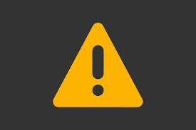
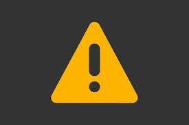

Hello! I'm Kaike. I am 14 years old and I live in Rio das Ostras (RJ), I'm a junior in High school.
I love programing, math, eletronics and sometimes, play a little bit on my video game.
I made this website to be my curriculum, and for train my abilities of web developmet and for fun, of course!
I love programing, math, eletronics and sometimes, play a little bit on my video game.
I made this website to be my curriculum, and for train my abilities of web developmet and for fun, of course!
Como eu disse antes, eu gosto muito de programação, por
sou iniciante nessa área, por isso não tenho muita
experiência, mas aqui vão alguns projetos meu!
No momento como principal projeto de programação eu fiz
esse site na qual vocês estão vendo! Em um futuro próximo
pretendo fazer mais websites (aceito ideias de website).

sou iniciante nessa área, por isso não tenho muita
experiência, mas aqui vão alguns projetos meu!
No momento como principal projeto de programação eu fiz
esse site na qual vocês estão vendo! Em um futuro próximo
pretendo fazer mais websites (aceito ideias de website).

Eu também adoro robótica! No momento eu uso o arduino
como a mimha plataforma de desinvolvimento! Em um futuro
próximo quero começar a criar meus próprios ciruitos, e
meu próximo projeto principal na qual estou estudando é
uma coil gun, é uma arma de eletromsgnetismo.
como a mimha plataforma de desinvolvimento! Em um futuro
próximo quero começar a criar meus próprios ciruitos, e
meu próximo projeto principal na qual estou estudando é
uma coil gun, é uma arma de eletromsgnetismo.
Aproveitando, venho falar que adoro física, química e
matemática também! Adoro a área de exatas!
No momento estou focando os estudandos de exatas em
física e matemática, pois é mais importante para minha
de atuação quando fizer a faculdade.
matemática também! Adoro a área de exatas!
No momento estou focando os estudandos de exatas em
física e matemática, pois é mais importante para minha
de atuação quando fizer a faculdade.